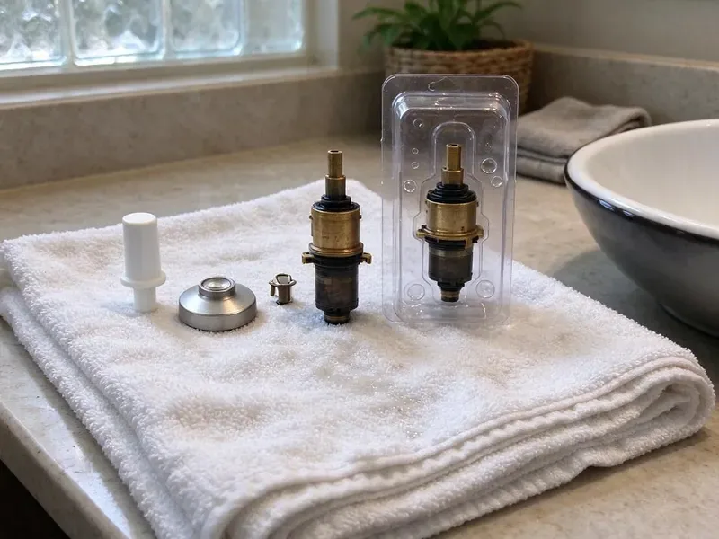

Toilet Repair in West Fargo, ND
Hard water and daily use are tough on toilet parts. We rebuild fill valves, flush valves and seals for homeowners throughout West Fargo, ND.
- Fill and Flush Valves Stocked
- Upfront Pricing
- Upfront Flat-Rate Pricing
- Licensed Plumbers

Need Professional Toilet Repair Services in West Fargo, ND?
Call now and a plumber can usually be at your door today with the parts to finish the job in one visit.
Your Trusted Source for Toilet Repair in West Fargo, ND
HPN Plumbing handles every kind of toilet repair, from a flapper that will not seal to a base leak that is soaking the subfloor. Our plumbers test the fill valve, flush valve, supply line and closet flange so the fix holds instead of buying you a few weeks. Most repairs are finished in under an hour with parts we carry on the truck.
Our expertise includes:
- Diagnose and fix all toilet leaks.
- Diagnosing and fixing phantom flushes
- Wax ring and closet flange repairs for leaks at the base

Additional Bathroom Plumbing Services in West Fargo, ND
From toilets to showers, our bathroom plumbing team in West Fargo, ND repairs, installs, and replaces every fixture with clean, code-compliant work.


Customers
Why Choose HPN Plumbing for Toilet Repair in West Fargo, ND?
Ignoring toilet issues can lead to higher water bills or more costly plumbing repairs down the line. Our plumbers are equipped to resolve problems efficiently.
- Fast Response, We put first urgent toilet repairs to minimize disruption to your daily life.
- Parts On Hand, We stock fill valves, flappers, flush valves, seals and supply lines for most common toilets.
- Transparent Pricing, You'll always receive a clear, upfront estimate before any work begins.
Citywide Coverage
Whether you live near downtown West Fargo or out on the edge of town, we can often schedule toilet repair the same day. We bring the same stocked truck and the same flat-rate pricing to every neighborhood.
Experienced Team
The HPN Plumbing team brings years of hands-on experience to every toilet repair job. We understand the unique challenges of plumbing systems in West Fargo homes and apply our expertise to deliver lasting solutions.
Safety-First Approach
We shut off water at the angle stop and protect your floors before any repair begins. If we find a rotted subfloor or a broken flange, we show you before going further.
Trusted Certified West Fargo Plumbing Services Professionals
At HPN Plumbing, we take pride in providing licensed, certified plumbing services throughout West Fargo, ND. Backed by leading industry credentials, our experienced plumbers combine technical skill with genuine customer care. Whether it is repair, installation, or maintenance, we follow strict safety and quality standards to deliver long-lasting results you can trust.
Call Us Now PHCC Plumbing Contractor Recognition
PHCC Plumbing Contractor Recognition Better Business Bureau (BBB) Accreditation
Better Business Bureau (BBB) Accreditation Angi Certified Pro
Angi Certified Pro ISO 9001 Quality Management Certification
ISO 9001 Quality Management CertificationDependable Toilet Repair Services in West Fargo, ND
Leaking Toilet Repair in West Fargo
Toilet leaks can cause serious water damage to your bathroom floor, subfloor, and even the ceiling below. Leaks can start from the base of the toilet, the tank, or the supply line. Common culprits include a worn-out wax ring, loose bolts, or cracked porcelain. We thoroughly inspect all potential leak points, replacing seals, tightening connections, or recommending bowl replacement if the porcelain is damaged, preventing further water intrusion.

Commercial Toilet Repair in West Fargo
Commercial toilets often see heavier use and require specialized parts and expertise for repair. HPN Plumbing offers complete toilet repair services for businesses and commercial properties throughout West Fargo. We understand the importance of minimizing downtime for your restrooms and provide efficient, durable repairs for flushometer toilets, low-flow models, and standard commercial units, ensuring your business operations run smoothly.
Toilet Flush Mechanism Repair in West Fargo, ND
If your toilet isn't flushing properly, it could be due to issues with the flush chain, handle, flapper, or fill valve. A weak flush might mean the tank isn't filling correctly, while a loose handle might not be engaging the flapper. Our plumbers are adept at diagnosing these internal tank problems, replacing worn or broken components like flush valves, fill valves, and toilet handles to restore full and effective flushing power.
Clogged Toilet Solutions in West Fargo, ND
Persistent toilet clogs are a common nuisance in West Fargo, ND homes, often caused by non-flushable items or excessive toilet paper. While a plunger can clear minor blockages, persistent clogs indicate a deeper issue in the trap, drain line, or even the main sewer line. Our plumbers utilize professional-grade augers and hydro-jetting equipment to safely and effectively clear even the toughest clogs without damaging your toilet or pipes. We also inspect for potential causes like root intrusion or pipe corrosion, which are sometimes seen in older homes.
Running Toilet Repair in West Fargo
A running toilet is not just annoying, it can waste hundreds of gallons of water a day, leading to significantly higher water bills. This common issue is usually caused by a faulty flapper, a misaligned fill valve, or an improperly adjusted float. Our plumbers quickly identify the exact cause, whether it's mineral buildup from hard water affecting the flapper seal or a worn-out component, and replace the necessary parts to stop the continuous flow and restore efficiency.
Leaking Toilet Base Repair in West Fargo, ND
Water around the base usually means the wax ring has failed or the toilet has been rocking on a loose flange. On slab foundations, the flange often sits on concrete and can crack when bolts are overtightened. We pull the toilet, inspect the flange, install a repair ring or new flange if needed and reset the bowl on a new seal. We also check for soft flooring so you know if any water damage needs attention.
Emergency Toilet Repair in West Fargo, ND
A badly clogged or overflowing toilet can be an emergency, especially in a one-bathroom home or a busy commercial setting. When you have a toilet crisis in West Fargo, ND, HPN Plumbing offers rapid response emergency services to prevent water damage and restore functionality. We're equipped to handle urgent issues like severe clogs, burst supply lines, or toilets that won't stop running, providing immediate relief and lasting repairs.

Toilet Tank and Bowl Crack Repair in West Fargo
Cracks in a toilet tank or bowl in West Fargo can lead to significant water leakage and require immediate attention. While small hairline cracks might be temporarily sealed, larger or structural cracks often require replacement of the affected component. Our technicians assess the severity of the crack and advise on the most cost-effective and durable solution. We can perform precise tank or bowl replacements, ensuring a watertight seal and proper function, preventing further water damage to your flooring or subfloor.
Toilet Repair Near Me in West Fargo, ND
When you search for toilet repair near me, you want a plumber who shows up with the right parts and a honest price. HPN Plumbing keeps trucks stocked for the toilets most common in West Fargo homes. That means most repairs are done in a single visit.
When you search for 'toilet repair near me' in West Fargo, ND, you want a trusted local expert who can respond quickly. HPN Plumbing is located to serve the entire West Fargo area, ensuring that our plumbers can reach your home or business promptly. We pride ourselves on providing friendly, neighborhood-focused service.
HPN Plumbing at a Glance
- Licensed and insured plumbers serving West Fargo, ND
- Same-day appointments and 24/7 emergency response
- Clear written estimates, no hidden fees
- 4.9-star rated by 408+ North Dakota customers
West Fargo Map
West Fargo Information
- Population
- 40,400
- Area codes
- Local
- Service area
- West Fargo and communities within 40 miles
- Nearby
- Fargo, Horace, Wahpeton, Valley City
Many rural homes get water from private wells or rural water systems, and iron and sulfur odors are common complaints. Timely toilet repair in West Fargo, ND stops wasted water and hidden floor damage before it spreads.
Expert Services
Trust our professionals for reliable HPN Plumbing solutions in West Fargo, ND.
Our Specialized Plumbing Services in West Fargo, ND
At HPN Plumbing, we provide a complete range of plumbing services across West Fargo, ND. From leak detection to full system installations, our team ensures fast, precise, and affordable service for both residential and commercial properties. Explore our core services below:


How Our Toilet Repair Process Works in West Fargo, ND
Our toilet repair process is built around one visit, one price and a toilet that works properly when we leave.
Request a Quote
Contact HPN Plumbing by calling (701) 403-1348 or filling out our online form to schedule your toilet repair service. We'll gather initial details about your issue.
Diagnosis & Estimate
A licensed plumber will arrive at your West Fargo home, thoroughly inspect your toilet, diagnose the problem, and provide a clear, upfront estimate for the repair.
Expert Repair
Once approved, our technician will complete the repair using quality parts and proven techniques, restoring your toilet's full function efficiently and cleanly.
Frequently Asked Questions About Toilet Repair in West Fargo
Most simple toilet repairs, like a new flapper or fill valve, run roughly $125 to $275 including parts and labor. Resetting a toilet on a new wax ring is usually $175 to $350, and flange repairs can bring the total to $300 to $500. We give you a firm price before starting.
While some minor running toilet issues, like a simple flapper adjustment, can be DIY, more complex problems might require a professional. If you're unsure about the cause, or if the issue persists after basic troubleshooting, calling HPN Plumbing ensures an accurate diagnosis and lasting repair, preventing potential water waste or damage.
Yes, HPN Plumbing stands behind the quality of our work. We offer a warranty on both the parts we install and the labor performed during your toilet repair. The specific warranty details will be provided at the time of service, ensuring your peace of mind.
The most common causes are a worn flapper, a mineral-crusted flush valve seat or a fill valve set too high so water spills into the overflow tube. A chain that is too short can also hold the flapper open. A quick inspection typically pinpoints the cause in minutes.
Yes, even small, steady toilet leaks can cause significant damage over time. Water can rot wood subflooring, degrade grout, warp tiles, and encourage mold growth. If left unaddressed, a leaking toilet can lead to costly structural repairs and health hazards.
We repair Kohler, American Standard, TOTO, Gerber, Mansfield, Glacier Bay, Delta and most other residential brands. We also service commercial flushometers from Sloan and Zurn.
Most flapper, fill valve and supply line repairs take 20 to 45 minutes. Pulling and resetting a toilet usually takes about an hour, and flange repairs can add another 30 to 60 minutes.
If your toilet is overflowing, right away reach behind the toilet and turn the small valve on the water supply line clockwise to shut off the water. This will stop the water from continuously filling the bowl. Then, try to clear any visible blockage with a plunger and call a professional plumber like HPN Plumbing for assistance.
What People Are Saying About Our Plumbing Experts?

Emily R.
I called HPN Plumbing for plumbing repair, and the technician was fast, polite, and thorough. They explained the problem clearly and fixed it the same day. I will definitely hire them again. Highly recommended!
Plumbing Repair · West Fargo, ND
Sofia M.
Two new toilets installed in one visit, no mess left behind, and the tech even adjusted a faucet he noticed was dripping. Fair pricing and really friendly.
Toilet Installation · Valley City, ND
Mark T.
When our office needed drain cleaning, HPN Plumbing provided quick, reliable service. The plumber arrived on time and made sure every drain flowed perfectly before leaving. Very satisfied.
Drain Cleaning · Horace, ND
Patricia H.
We had a slab leak that two other companies could not find. HPN Plumbing located it in under an hour, explained our options, and the price matched the quote to the dollar.
Slab Leak Repair · Wahpeton, ND
James P.
Our commercial plumbing system had a leak under the sink, and HPN Plumbing handled it professionally. The plumbers arrived quickly and restored everything without disruption to our customers.
Commercial Plumbing · Fargo, ND
Daniel K.
A pipe burst at 11 pm and they actually answered. The plumber showed up within the hour, shut everything down, and had us back to normal the next morning. Could not ask for more.
Emergency Plumbing · West Fargo, ND